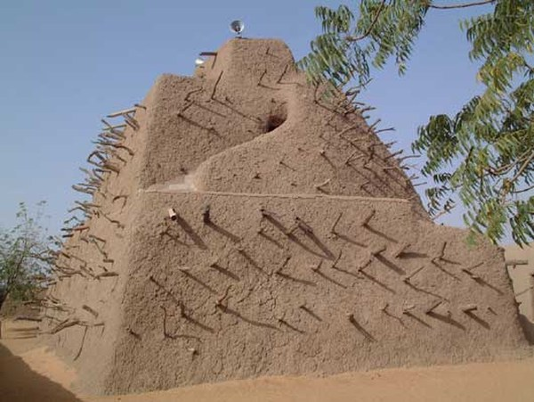

THE MUSTERING OF SONGHAI
Qin Shi Huang stockpiles tribute; Askia Muhammad keeps the books — and the books, properly kept, are the stronger empire.

THE MUSTERING OF SONGHAI
Qin Shi Huang stockpiles tribute; Askia Muhammad keeps the books — and the books, properly kept, are the stronger empire.
Feature map
Level-by-level features, as the figure refined them.
The Rolls
passive
Tier IV · Buffer (Quartermaster) · Suggested CE ability: INT · Primary verb: Record. Technique DC = 8 + proficiency bonus + INT modifier. The Rolls = willing creatures Askia has Enrolled. Enrollment is consent, recorded — a creature enrolls as a free action on its turn, and only if willing. This is the willing-decline valve, built into the foundation.
As a bonus action (no CE), Askia may Enroll a willing creature he can see within 60 ft into the Rolls; enrollment lasts until Askia's next long rest (invented attribution). Enrolled creatures gain +1 to saving throws while within 60 ft of Askia. The machine knows its own.
Post the Watch
bonus action, 2 CE
Askia designates a supply line — a straight line up to 120 ft between two points he can see. For 1 minute, enrolled allies moving along the line (within 10 ft of it) gain +10 ft movement and ignore difficult terrain. The roads are kept.
The Granaries
action, 3 CE
He distributes rations: up to PB enrolled allies within 60 ft gain temporary HP equal to 1d8 + INT modifier (2d8 + INT at L11). The stores are full. The receipts are in order.
Requisition
reaction, 2 CE
When an enrolled ally within 60 ft would take damage, Askia may reduce the damage by 1d8 + INT modifier before it is applied — the stores absorb the blow. Once per round.
The Four Viceroys
action, 5 CE, concentration, 1 minute
He divides the field into four districts — four 30-ft squares within 120 ft, designated on activation. An enrolled ally starting its turn in a district gains that district's benefit until the start of its next turn: North (the garrison): +2 AC. East (the roads): +10 ft movement. South (the courts): advantage on the next save. West (the arsenal): +1d6 damage on the next attack. He may redesignate the districts as a bonus action.
Held in Committee
action, 4 CE
Bureaucratic friction, weaponized. Up to PB enemies within 60 ft make an INT save vs his DC. On failure, until the end of Askia's next turn the creature's speed is halved and it cannot take reactions — its orders are stuck in committee. This delays; it compels nothing.
The Standing Army
action, 8 CE, once per day
For 1 minute, enrolled allies within 120 ft move as one machine: when an enrolled ally moves, another enrolled ally may use its reaction to move up to half its speed; when an enrolled ally hits with an attack, a different enrolled ally may make one weapon attack as a reaction against the same target (once per round per ally). The machine moves as one.
Maximum, Domain, or equivalent.
Capstone material.
Maximum: THE PILGRIM'S RETURN (action, 10 CE, once per long rest)
For 1 minute, the administration is perfect: enrolled allies within 300 ft gain +2 to attack rolls, saving throws, and AC; The Granaries becomes a bonus action; and whenever an enrolled ally fails a saving throw, Askia may spend his reaction and 3 CE to let them reroll.
Domain Expansion: THE EMPIRE ADMINISTERED (full-turn action, 20 CE)
60-ft enclosed Domain. 800 clash points · 5-round burnout · 2-minute duration (per zack's Tier IV bookkeeping). - Sure-hit (allies): every willing creature in the Domain is Enrolled; all four Viceroy districts apply across the whole Domain simultaneously; enrolled allies regain 1d8 + INT temporary HP at the start of each of Askia's turns. - Sure-hit (enemies): Held in Committee, perfected — enemies in the Domain have halved speed, cannot take reactions, and the first attack each enemy makes each round has disadvantage — their orders arrive late, in triplicate. The empire, administered: his side scheduled, yours delayed.
- Clash points
- 800
- Burnout
- 5 rounds
- Duration
- 2 minutes
- Radius
- 60-ft enclosed Domain
- Activation ✦
- full-turn action
- CE cost ✦
- 20
✦ Canon: figure Domains are Specific Domains — the stated profile governs, not the player point-unlock table.
THE RECORD OUTLIVES THE RULER (passive)
If Askia falls unconscious or dies, the Rolls persist for 1 minute — enrolled allies keep every benefit, and the districts hold. Once per long rest, when he would be reduced to 0 HP, the ledger balances: he drops to 1 HP instead, and every enrolled ally within 60 ft gains temporary HP equal to his INT modifier + PB.
Build-defining options.
This technique grants Innate Technique Feats — hand-authored applications of the figure's art, available in the builder's feat picker when you select this technique.
Edge cases and shared systems.
Campaign canon notes